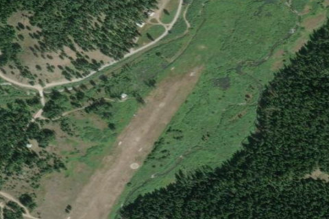

MAGEE
S77 · ID

Aerial imagery source: Esri, Vantor, Earthstar Geographics, and the GIS User Community
| Identifier | S77 |
|---|---|
| State | ID |
| Runway length | 2,200 ft |
| Runway width | 150 ft |
| Surface | TURF |
| Runway | 01/19 |
| Elevation | 3,002 ft |
| Ownership | public |
| CTAF | 122.9 |
| Coordinates | 47.84155833, -116.25199444 |
Notes
[idaho_itd] State Airfield [shortfield] Location Overview Magee sits at the confluence of Trail Creek and Teepee Creek in Northern Idaho's Panhandle National Forest, about 23 miles NE of Coeur d'Alene, Idaho, on 20 acres of land, near Pritchard in Shoshone County. The field sits at an elevation of 3,002 feet and has a single turf runway oriented 1/19, 2,200 feet long. Camping & Recreation The strip has tie downs, a campground, and potable water during summer months, along with a windsock and segmented circle. More specifically, there are two camping sites at the Magee Airstrip Campground with a pit toilet, tables, fire pits, and stoves, plus another site on the south end near the creek, and an old Forest Service Ranger cabin near the strip is available for rent. Both nearby creeks attract seasonal fishing, and a trail leads from the southwest end of the airfield to bridges across both waters. Notes & Warnings The strip gets no winter maintenance, and sees snowmobile activity in winter; the surface can be uneven and soft in the spring. Official guidance recommends landing on runway 19 and taking off on runway 01 when wind conditions permit. Because it sits within a Wilderness area, no roads or mechanized equipment can be used for maintenance, making runway logistics a challenge — a spring flooding problem has been eroding part of the field for years, and a volunteer-engineered restoration effort is underway with the Forest Service to recover about 700 feet of runway. History The site's story predates aviation entirely: Charles Magee built a homestead at the Trail Creek–Tepee Creek confluence in September 1905, and by 1908 the Forest Service had appropriated part of it as the Magee Ranger Station. In the 1930s it became a Civilian Conservation Corps base camp housing up to 400 men who built roads, maintained trails, and fought white-pine blister rust. The airstrip itself dates to WWII, when the Army Corps of Engineers created it in the 1940s as a hidden fighter base in case of a Japanese attack on the West Coast — though locals reported fighter aircraft never actually visited during the war. Today the historic ranger cabin still stands, the site is listed on the National Register of Historic Places, and the airstrip lives on as a beloved backcountry destination for Idaho pilots.